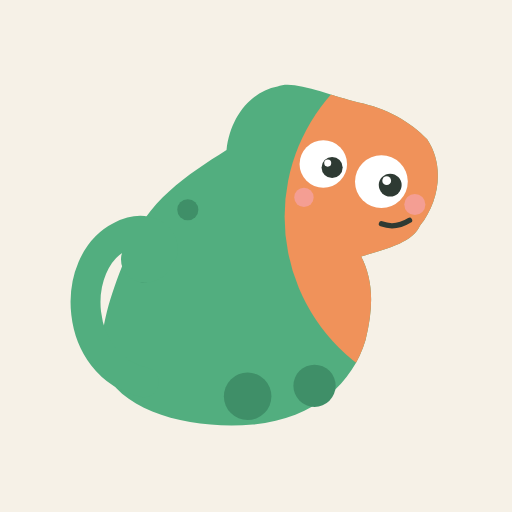
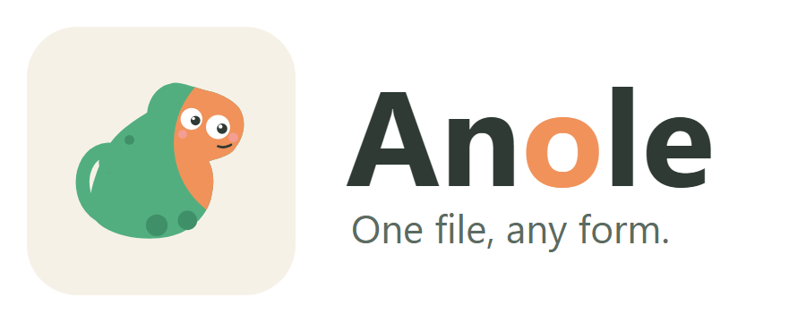
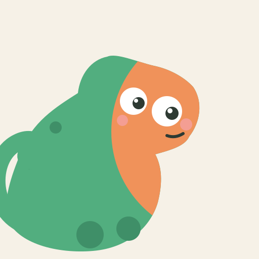
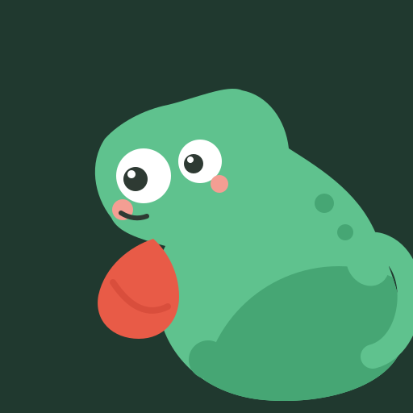
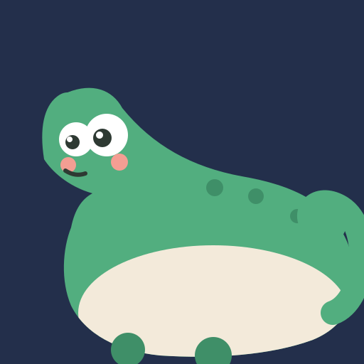

具象可爱版：平滑贝塞尔剪影 + 螺旋卷尾 + 头冠（casque）+ 大眼白高光 + 腮红 + 圆爪子， 三色主调（形象 2 色 + 背景 1 色）加少量辅助色（高光/腮红/暗部）。对标 Duolingo / LINE Friends 的亲和力。 下方含 64px / 32px 缩小验证（logo 可辨识门槛）与镜像角变体。

正式资产在 branding/final/：icon.svg / icon-dark.svg / logo.svg / lockup-light.svg / lockup-dark.svg / favicon.ico，以及 png/ 目录下的 16–512px 全尺寸。


绿色身体正“变成”橙色——用形象双色直接讲格式转换的故事。物种特征：卷尾。左下角探出。

红色喉扇（dewlap）是 anole 的标志性动作——整个形象只有它一个物种特征，喜气、辨识度最高。右下角探出。

圆胖蜥蜴贴着画布底边趴下，奶白肚皮 + 绿背构成两个宽色域，卷尾翘起——最“接地气”的治愈姿态。右下角。